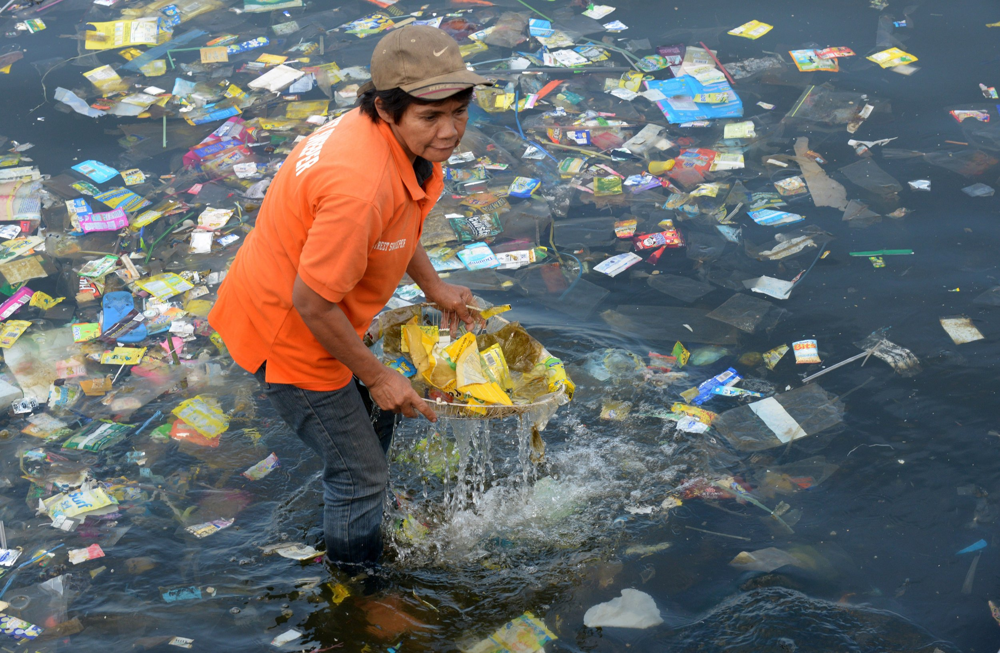

Замърсяването е внасянето на вредни материали в околната среда. Тези вредни материали се наричат замърсители. Замърсителите могат да бъдат естествени, като вулканична пепел.
Изгарянето на изкопаеми горива както в енергийни централи, така и в превозни средства, отделя огромни количества въглероден диоксид в атмосферата, причинявайки климатични промени. Индустриалните процеси също отделят частици, като серен диоксид, въглероден окис и други вредни газове.
Замърсяването на водата може да бъде причинено по различни начини, като един от най-замърсяващите са градските отпадъчни води и изхвърлянето на промишлени отпадъци.
В нашите океани попадат над 8 милиона тона пластмаса.